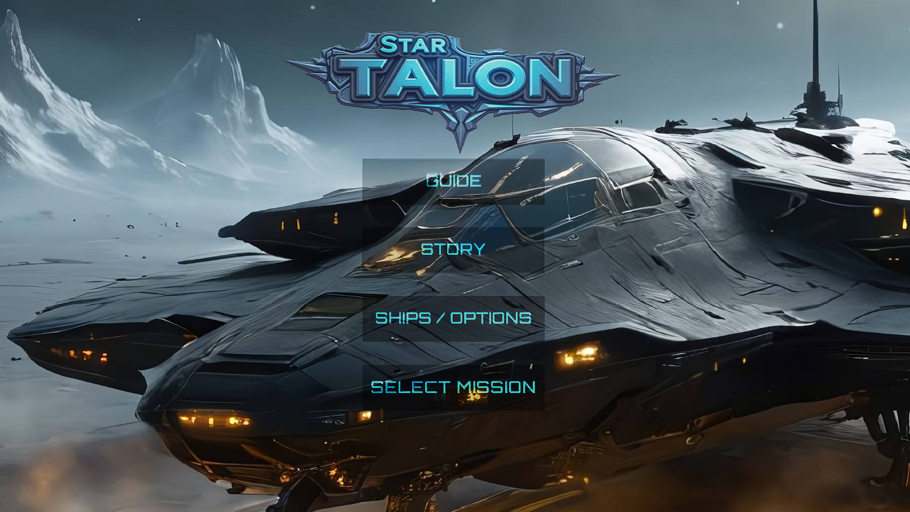

STAR TALON.
A focused QA project centred on difficulty, bugs, player clarity, and gameplay flow.

LOOKING FOR THE
FRICTION.
Working on Star Talon with Mike, the independent developer behind the game, was a really nice experience. I joined the project as a freelance game tester through Upwork and played through all 12 missions.
I recorded each mission as a full no-commentary playthrough and created a QA report covering visual and audio concerns, bugs, general observations, and difficulty progression. It was a pleasure contributing feedback and working directly with Mike on the project.
I can only recommend giving Star Talon a try — the game is linked below.
Play
Experience the game naturally and consistently from beginning to end.
Observe
Pay attention to how the experience communicates, challenges, and responds to the player.
Document
Record bugs, difficulty points, and notable observations with context and commentary.
PROJECT FILES.
